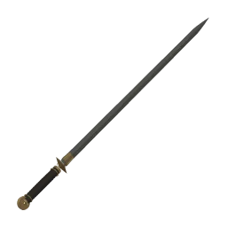
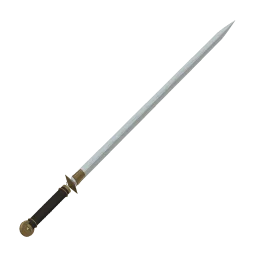

적막 · 전설의 한손검
간장 · 막야
한 쌍의 이름, 손에 드는 것은 한 자루.
흰 기운을 두른 검은 간장, 먹빛 기운을 두른 흰 막야를 만나 보세요.

간장
- 전체 길이 · 무게
- 95cm · 0.95kg
- 기운
- 은은한 백광
검은 손잡이와 검은 칼날.
더 길고 가벼운 검.

막야
- 전체 길이 · 무게
- 91cm · 1.12kg
- 기운
- 검은 아지랑이
흰 손잡이와 흰 칼날.
더 짧고 묵직한 검.
두 검 모두 부러지지 않습니다. 후광은 은은하게 표현되며, 별도로 발동하는 특수 능력은 없습니다.
두 검 중 골라서 겨루기
위 체험에서는 직접 고릅니다. 일반판에서는 한 묶음으로 추첨한 뒤 간장과 막야 중 한 자루가 같은 확률로 나옵니다.